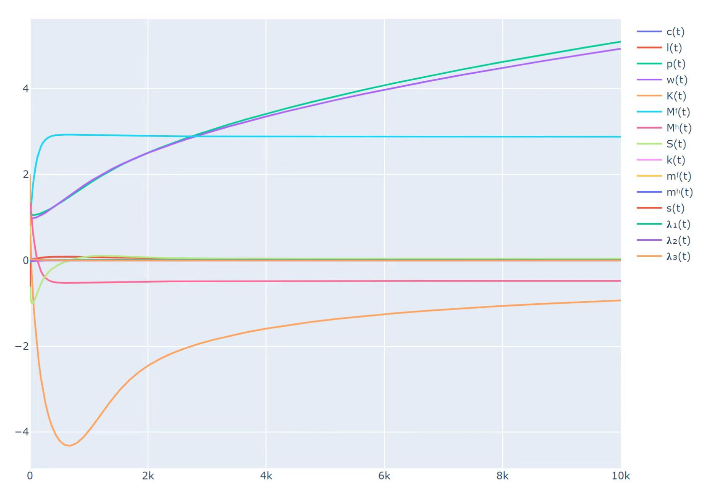

GCDModel_A1
This page shows the Model A1 of Macroeconomic General Constrained Dynamic models(GCD Models).
3 steps to use GCDModel_A1 System:
- Define components
- Connect components
- Solve
Example: A basic test for components
This system has only two components–-we only study the interaction between one firm and one household.
# Define components
using Ai4EComponentLib
using Ai4EComponentLib.EconomyGCDModel_A1
using ModelingToolkit, OrdinaryDiffEq
@named firm = Firm(α=0.05, β=0.011, dp̂=0.011, μ₂=0.011, μ₃=0.011, μ₄=0.011, μ₇=0.05, μ₈=0.011, μ₉=0.0, Ŝ=0.011, l̂=0.011)
@named household = Household(α=0.05, β=0.011, γ=0.25, K₀=0.1, μ₁=0.011, μ₆=0.011, M̂ʰ=0.011)
# Connect components
eqs = [
connect(firm.m, household.m)
]
@named connects = ODESystem(eqs, t)
@named model = compose(connects, [firm, household])
# Simplify the system and solve
sys=structural_simplify(model)
prob = ODAEProblem(sys, [], (0.0, 10000.0))
sol = solve(prob, Tsit5())Results are shown in the figure below. Actually initial values should be selected carefully, on account of the system isn't always converge.
